ggstatsplot2026-05-11
在开始本节之前，请确保您已安装并加载以下的包：
ggstatsplot优势| 传统做法 | ggstatsplot |
|---|---|
| 画图和检验分开写 | 一个函数同时完成 |
| 需要手动选择检验方法 | 根据数据自动选择 |
| 效应量需要另外计算 | 图上直接显示 |
| 结果整合费时费力 | 图形即报告 |
一行代码：箱线图 + 统计检验 + 效应量，全部自动完成
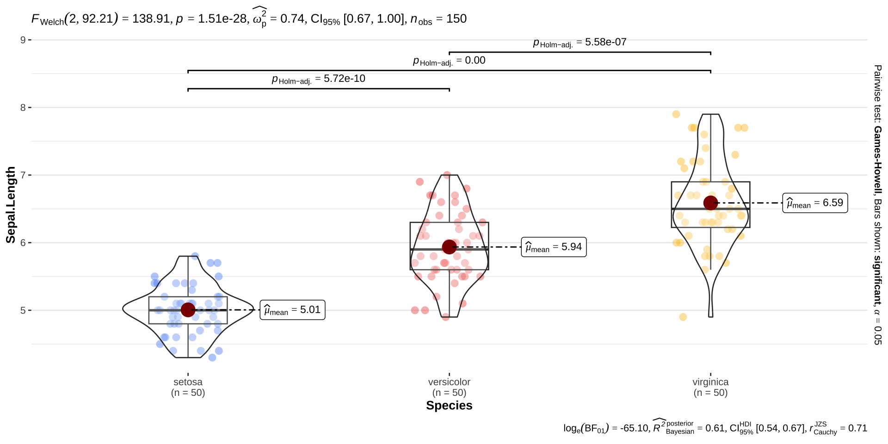
ggbetweenstats()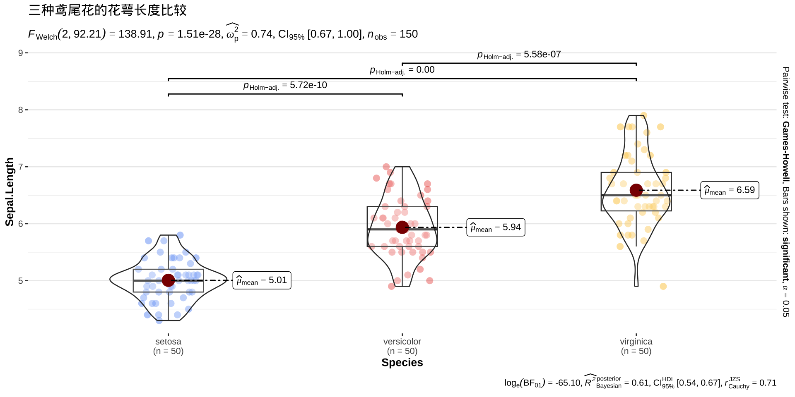
Tip
比较不同组别之间某个连续变量的差异, 自动选择 t 检验（2组）或 ANOVA（3组以上）。
图的顶部会显示：
Tip
不需要记住这些符号的计算方法，只需要关注 p 值和效应量的大小。p < 0.05 表示组间差异显著。
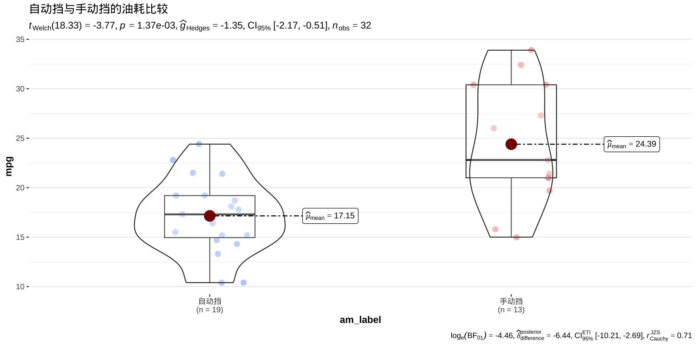
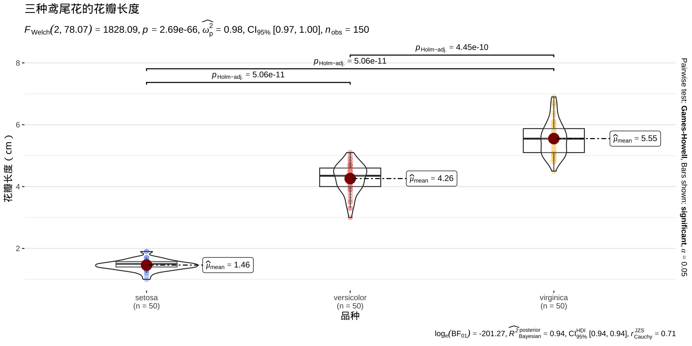
ggscatterstats()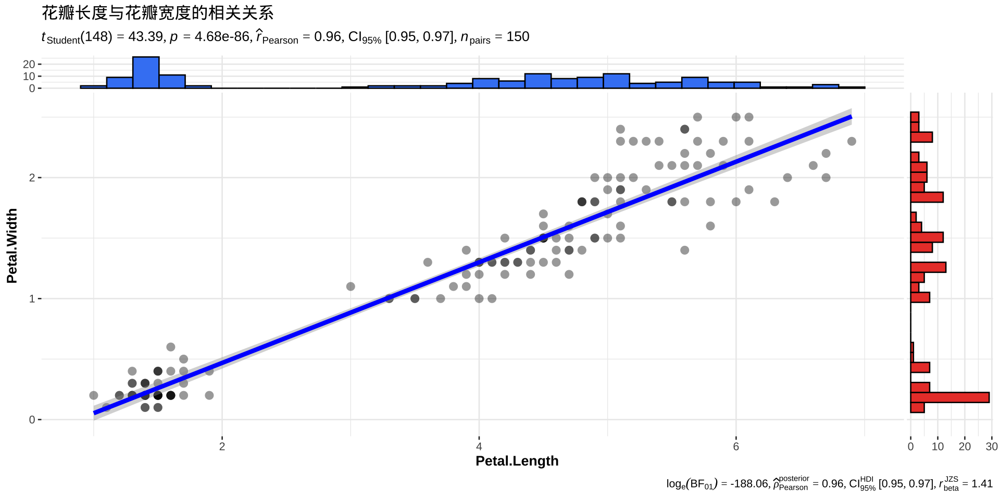
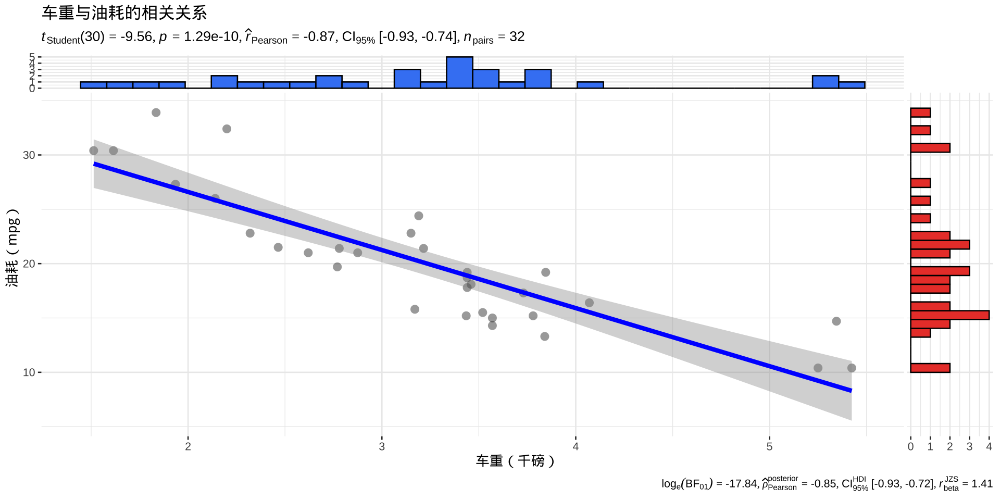
Tip
图上会显示 Pearson r（或 Spearman ρ）、p 值、置信区间, 边缘还会自动画出两个变量各自的分布直方图。
gghistostats()Tip
查看单个连续变量的分布，并检验它是否与某个假设值存在显著差异（单样本 t 检验）。
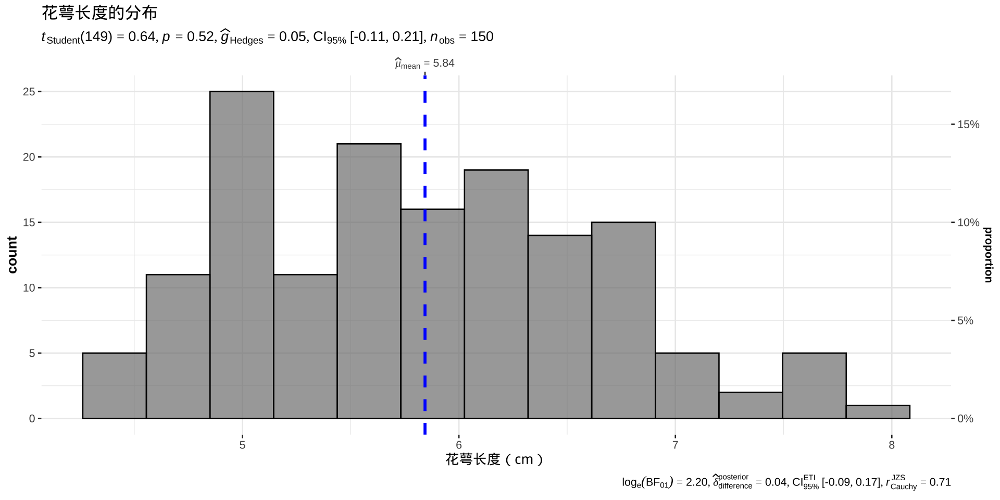
ggbarstats()Tip
展示两个分类变量之间的关系，自动进行卡方检验（χ²检验）。
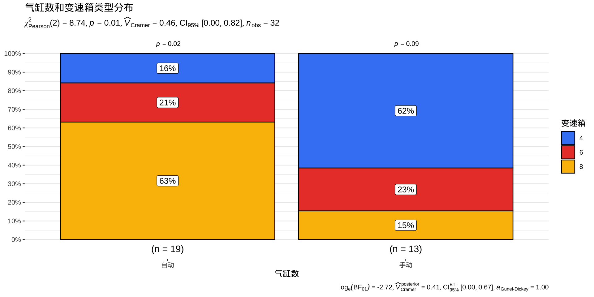
ggcorrmat()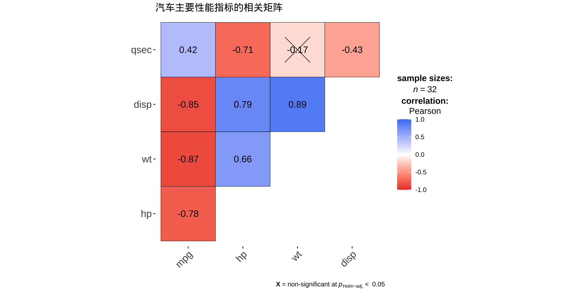
Tip
颜色越深表示相关系数绝对值越大，打叉（×）的格子表示相关不显著（p ≥ 0.05）。
grouped_ 系列函数Tip
按某个分组变量，自动拆分成多个子图，每个子图独立做统计检验。
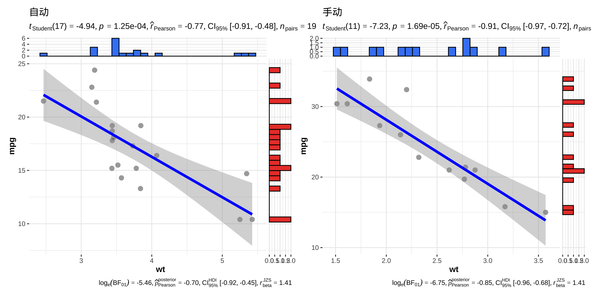
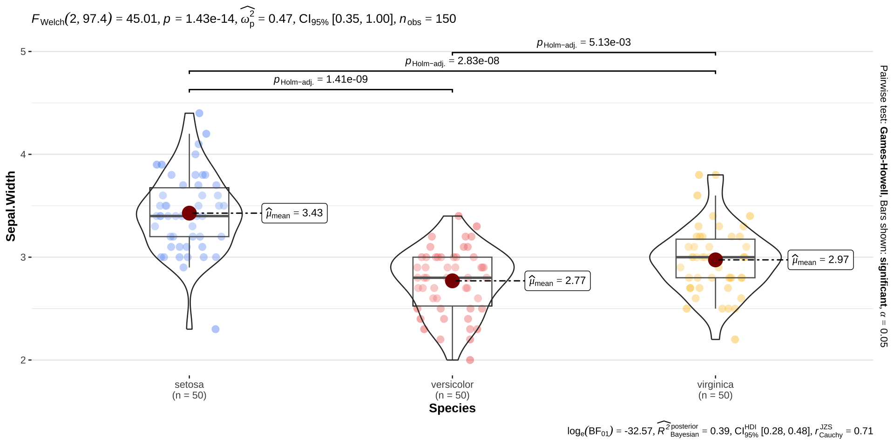
Tip
F → ANOVA 的 F 统计量
t → t 检验的 t 统计量
p → p 值（< 0.05 表示显著）
ω² → ANOVA 的效应量（Omega squared）
d → t 检验的效应量（Cohen’s d）
r → 相关系数
CI → 置信区间（95% Confidence Interval）
只需要关注 p 值和效应量。p < 0.05 → 差异显著。效应量越大 → 实际差异越有意义
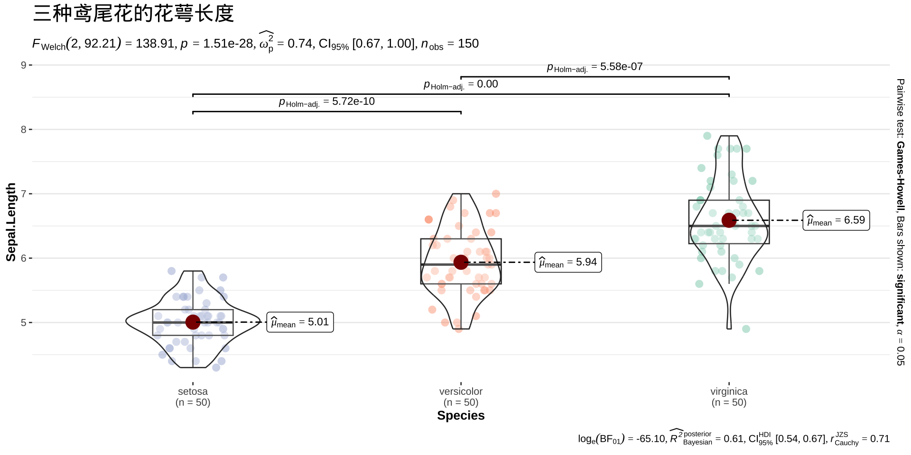
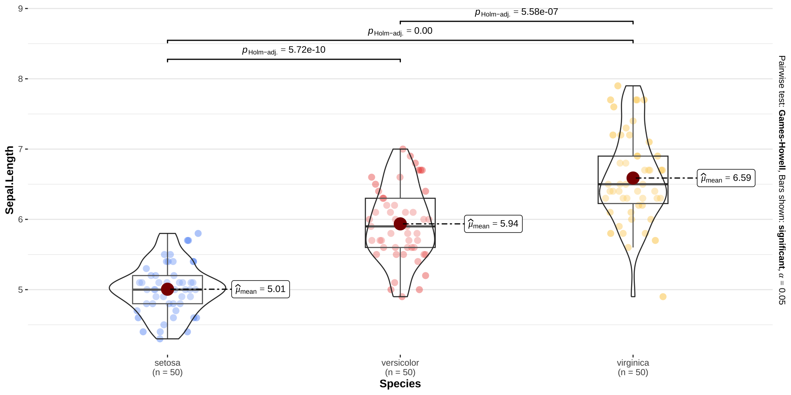
| 函数 | 用途 | 自动检验 |
|---|---|---|
ggbetweenstats() |
分组比较（连续变量） | t 检验 / ANOVA |
ggscatterstats() |
两变量相关 | 相关系数检验 |
gghistostats() |
单变量分布 | 单样本 t 检验 |
ggbarstats() |
分类变量关联 | 卡方检验 |
ggcorrmat() |
多变量相关矩阵 | 相关显著性 |
grouped_ggbetweenstats() |
分组后各自比较 | 同上，按组 |
grouped_ggscatterstats() |
分组后各自相关 | 同上，按组 |
Tip
先跑起来再说：把数据名、x、y 填进去，其他参数保持默认，先看图再慢慢调整。
图是 ggplot 对象：跑通之后，可以继续用 + 添加 ggplot2 的图层修改外观。
不懂统计符号没关系：先关注 p 值，p < 0.05 就说明有统计意义，其他细节需要了解时再搜索。
grouped_ 系列是加分项：一行代码按分组出多张图，
是 ggstatsplot 最省力的功能之一。
2小时R入门 | © 2026 顶刊研习社, Li Zongzhang